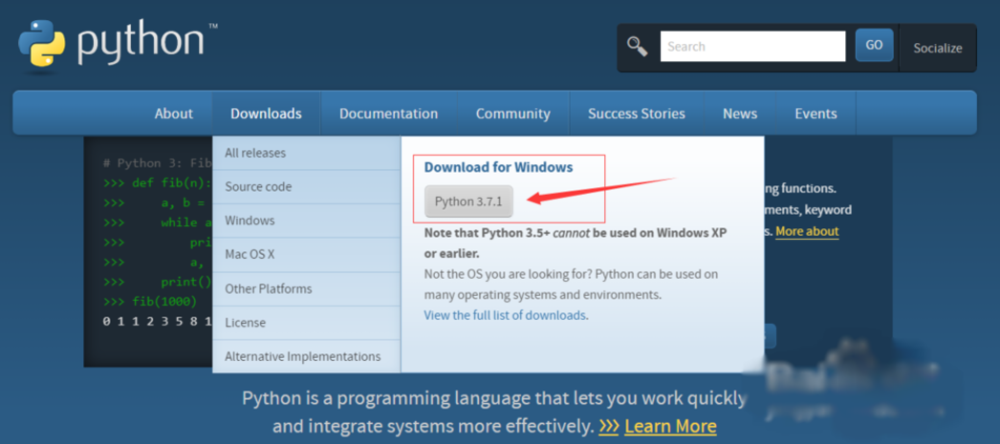
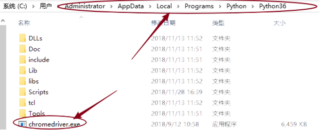
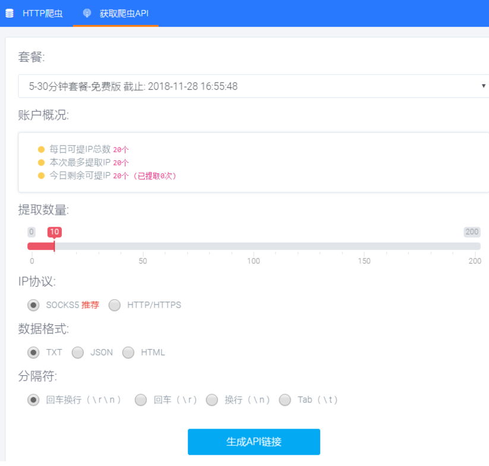
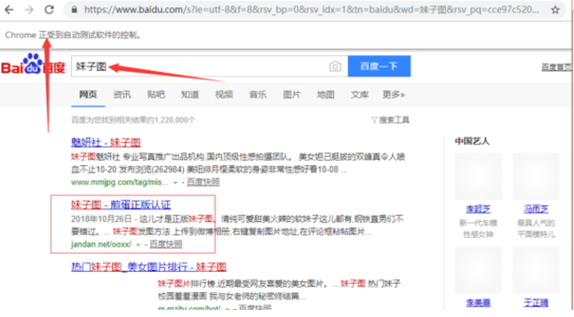

通过python配合爬虫接口利用selenium实现自动化打开chrome浏览器，进行百度关键词搜索。
1、安装python3，访问官网选择对应的版本安装即可，最新版为3.7。

2、安装selenium库。
使用 pip install selenium 安装即可。
同时需要安装chromedriver,并放在python安装文件夹下，如下图所示。

3、获取爬虫接口链接。
注册账号，点击爬虫代理，领取每日试用。

from selenium import webdriver
import requests,time
#自建IP池
def get_proxy():
r = requests.get('http://127.0.0.1:5555/random')
return r.text
import random
FILE = './tuziip.txt'
# 读取的txt文件路径
# 获取代理IP
def proxy_ip():
ip_list = []
with open(FILE, 'r') as f:
while True:
line = f.readline()
if not line:
break
ip_list.append(line.strip())
ip_port = random.choice(ip_list)
return ip_port
def bd():
chromeOptions = webdriver.ChromeOptions()
# 设置代理
chromeOptions.add_argument("--proxy-server=http://"+proxy_ip())
# 一定要注意，=两边不能有空格，不能是这样--proxy-server = http://202.20.16.82:10152
browser = webdriver.Chrome(chrome_options = chromeOptions)
# 查看本机ip，查看代理是否起作用
browser.get("https://www.baidu.com/")
browser.find_element_by_id("kw").send_keys("ip")
browser.find_element_by_id("su").click()
time.sleep(2)
browser.find_element_by_id("kw").clear()
time.sleep(1)
browser.find_element_by_id("kw").send_keys("百度")
browser.find_element_by_id("su").click()
time.sleep(2)
browser.find_element_by_id("kw").clear()
time.sleep(1)
browser.find_element_by_id("kw").send_keys("百度")
browser.find_element_by_id("su").click()
time.sleep(2)
browser.find_element_by_id("kw").clear()
time.sleep(1)
browser.close()
# 退出，清除浏览器缓存
browser.quit()
if __name__ == "__main__":
while True:
bd()5、运行程序，如下图所示，可自动化搜索。
